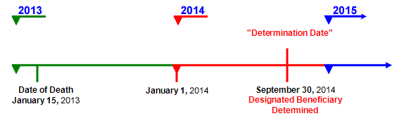

Whether the IRA owner's beneficiaries qualify as designated beneficiaries is determined as of September 30 of the year following the year of the IRA owner's death. This is known as the "Determination Date."
For clarity, the timeline below shows an example:

As you can see in the above illustration, the time period between the IRA owner's death and the determination of the designated beneficiary for RMD purposes allows a period of time (at least 9 months) in which there is some potential flexibility in formulating estate planning strategies. There are, however, limitations as to how much these designations can change.